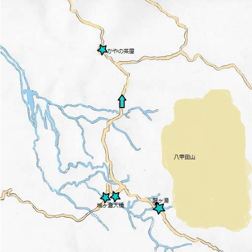

八甲田山

江戸時代から湯治場として栄えました。
広さ80坪の千人風呂には、熱の湯や四分六分の湯など5つの浴槽があり、病状により入浴順序を変えると効果的です。
長さ360m、谷底からの高さ122mの上路式アーチ橋です。橋の上 から城ケ倉渓流や八甲田の山々を眺めることができます。
萱の三杯茶で有名な高原です。
萱の三杯茶は「一杯飲むと三年長生きし、二杯飲むと六年長生きし、三杯飲むとなんと死ぬまで長生きする。」と言われています。